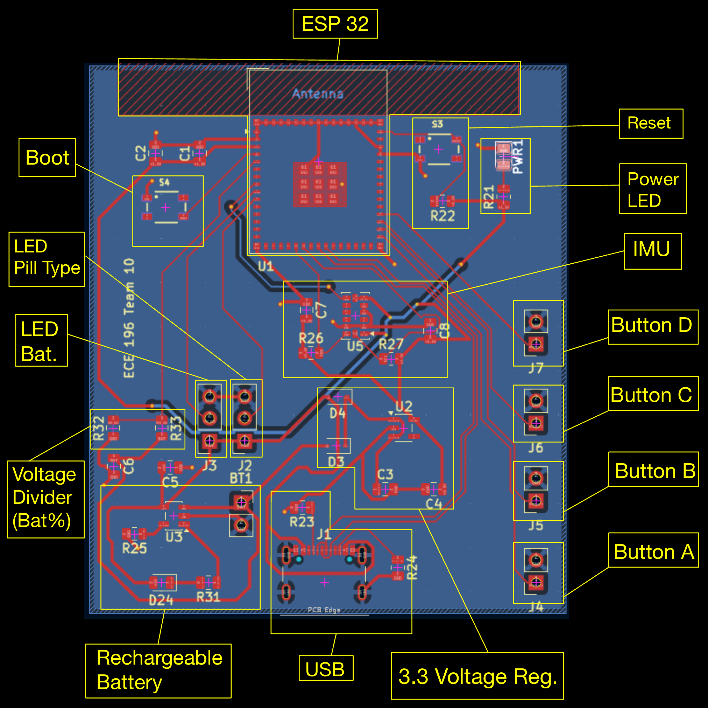
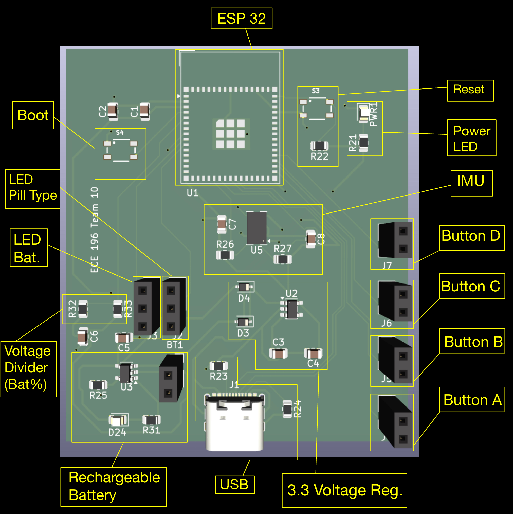

The brains of the pillbox.
The hardware that makes the pillbox actually work, seen three ways — as a schematic, as a board layout, and as a 3D render — followed by the design rationale behind it.
How everything is wired.
Electrical connectivity between the microcontroller, power supply, LEDs, and button inputs.

The physical arrangement.
Physical component placement and routing on the PCB — sized to fit underneath the pill containers.

Assembled, in three dimensions.
Rendered view of the assembled board, used to visualize spacing, height clearance, and how it'll sit inside the enclosure.

Our Mini Projects
ADXL343 Lifting Detection Tutorial
- This tutorial covers how to use an ADXL343 in order to detect when the PCB is lifted.
- In our project, we use this to tell the microcontroller when to light the battery LEDs.
Deep Sleep Tutorial
- This tutorial covers how to configure a PCB to enter deep sleep under certain conditions.
- In our project, the PCB enters a partial sleep after motion is not detected for some time.